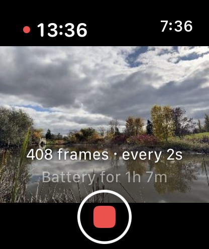
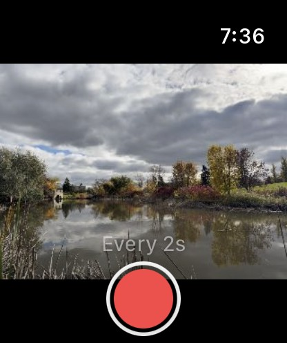

Shoot for minutes or for hours, fix the flicker, add star trails, and export a finished video, all on your iPhone. No account, and nothing leaves the phone.
Shoot
Intervals from half a second to 24 hours.
Smart exposure follows the light from day into night, without the steps that make a sunset flicker.
Auto and full Manual modes, with ISO and shutter you can change while it records.
Keep every frame as a photo: HEIC, JPG, RAW or ProRAW, up to 48 MP.
Focus peaking and a live histogram.
An Apple Watch remote: start and stop the shoot, and see the camera's view, from your wrist.


Edit
Deflicker evens out frame-to-frame brightness, with a curve you can see and adjust.
Star Trails builds trails from a night shoot, with passing aircraft and satellites removed.
Smooth Motion blends frames for the look of a slower shutter.
Edits: light, colour, detail and crop, applied to every frame.
Every step can be changed or removed later. Your original is never altered.
Speed and export
Speed ramps drawn as a curve: slow down, speed up, or hold on a moment.
Export H.265, H.264 or ProRes, from 720p up to 6K, in 8-bit, 10-bit or HDR.
Save to Photos, share, or export the whole project as a zip.
Build a project from photos you already have, including RAW files from another camera.
Light
Dark
Private
No account, no ads, no analytics. The app never connects to the internet, and your photos and videos stay on your iPhone.
What you need
An iPhone with iOS 18 or later. RAW, ProRAW, 48 MP and HDR capture appear on the iPhones that support them. The Apple Watch remote needs watchOS 11 or later.